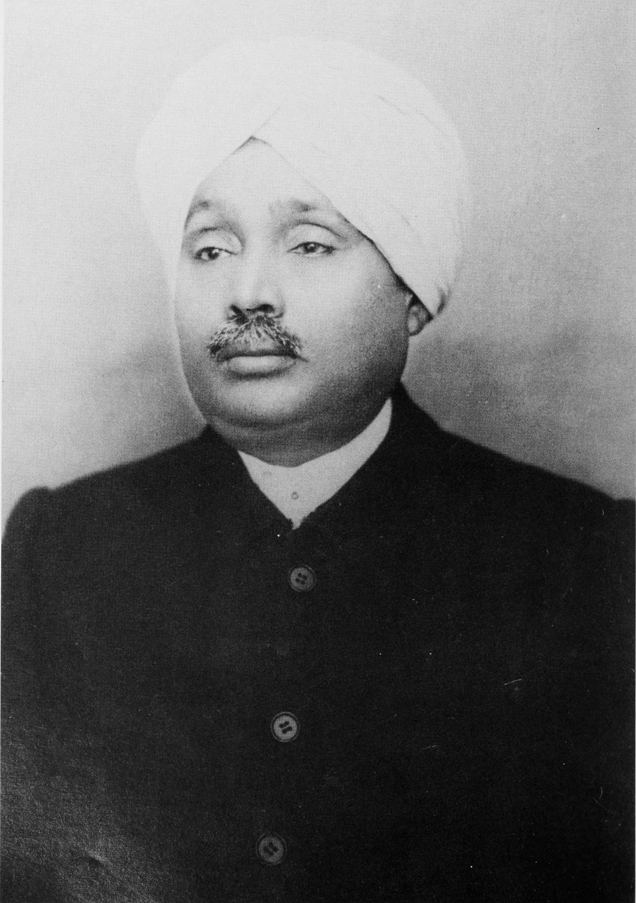

Lala Lajapati Roy

Born: 28 January 1865, Dhudike
Died: 17 November 1928, Lahore, Pakistan
Famously Known As: Punjab Kesari
Famously known as Punjab Kesari, he was one of the extremist members of the Indian National
Congress. He formed a trio with Bipin Chandra Pal and Bal Gangadhar Tilak to be known as
Lal-Bal-Pal where they executed several revolutionary activities. He led the Punjab Protest
against the Jallianwala Incident and Non-Cooperation Movement. He fought against the Simon
Commission Protest and lost his life because of a lathi charge by the Britishers.
Lala Lajpat Rai, (born 1865, Dhudike, India—died November 17, 1928, Lahore [now in Pakistan]),
Indian writer and politician, outspoken in his advocacy of a militant anti-British nationalism in
the Indian National Congress (Congress Party) and as a leader of the Hindu supremacy movement.
After studying law at the Government College in Lahore, Lajpat Rai practiced at Hissar and Lahore,
where he helped to establish the nationalistic Dayananda Anglo-Vedic School and became a follower of
Dayananda Sarasvati, the founder of the conservative Hindu society Arya Samaj (“Society of Aryans”).
After joining the Congress Party and taking part in political agitation in the Punjab, Lajpat Rai was
deported to Mandalay, Burma (now Myanmar), without trial, in May 1907. In November, however, he was
allowed to return when the viceroy, Lord Minto, decided that there was insufficient evidence to hold him for subversion.
Lajpat Rai's supporters attempted to secure his election to the presidency of the party session at Surat in
December 1907, but elements favouring cooperation with the British refused to accept him, and the party split over the issues.
During World War I, Lajpat Rai lived in the United States, where he founded the Indian Home Rule League of America (1917)
in New York City. He returned to India in early 1920, and later that year he led a special session of the Congress
Party that launched Mohandas (Mahatma) Gandhi's noncooperation movement. Imprisoned from 1921 to 1923,
he was elected to the legislative assembly on his release. In 1928 he introduced the legislative assembly
resolution for the boycott of the British Simon Commission on constitutional reform. Shortly thereafter he died,
after being attacked by police during a demonstration in Lahore.